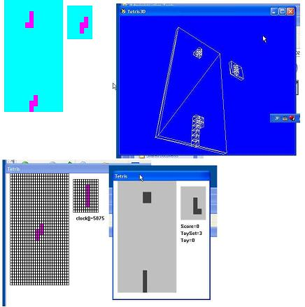

tetris
download
description
- tetris (dos,api,directx)
- api, dos, directdraw에서 코드를 공유하여 포팅

左上-DDRAW&GDI,左下-API&C++,右上-D3D,右下-API&C
dos의 경우 win98 계열만 작동(capture 이미지 없음)
블럭 한개 그리는 함수와 인풋 제어, 프레임워크를 플랫폼에 맞게 개발하고 그것을 하나의 모듈로 공유하여 포팅 개념을 적용. 3D와 2D의 경우는 플랫폼의 문제가 아니기 때문에 포팅 개념이 적용되지 않았다. 투영 시스템을 만들면 포팅 개념이 적용 될지 모르나 일단 포팅에서는 논외로 하였다. 게임의 시스템(테트리스의 룰)은 ANSI 규격의 C/C++을 지원하여 플랫폼과 무관하게 독립적인 개체로 유지되도록 하였다.
방향키로 블록 회전을 하고 스페이스키로 블럭 속도를 가속한다.